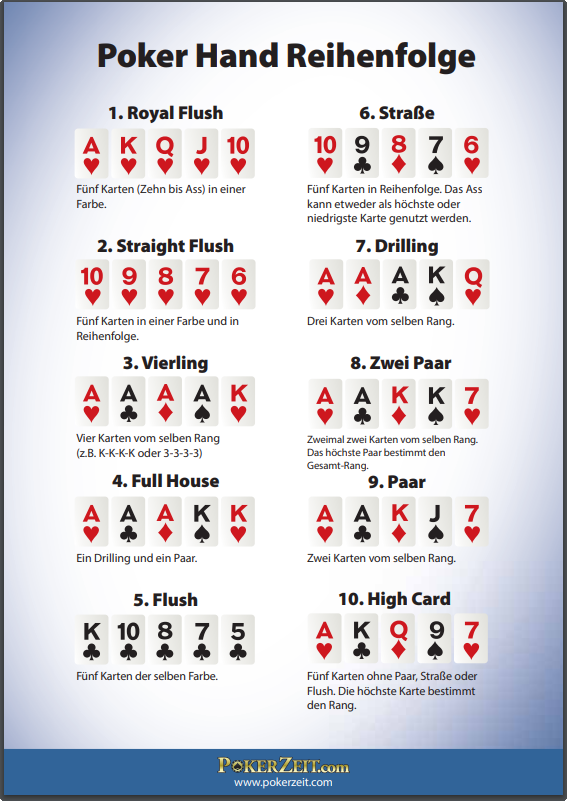

Obwohl im Wilden Westen eher Faro statt Poker gespielt wurde, versuchen wir uns am beliebten Kartenspiel Poker. Da es so viele Varianten gibt, spielen wir die einfache Five Card Draw Variante. In jeder Runde gibt es einen Dealer, der Rest sind Spieler*innen. Nach jeder Runde wechselt der Dealer im Uhrzeigersinn.
Jede*r Spieler*in erhält 5 Karten. Spielen wir mit Einsätzen, wird das erste Mal gesetzt. Die Person links vom Dealer darf den ersten Einsatz tätigen (beliebig hoch) oder abwarten und nichts setzen.
Der Reihe nach sind nun die anderen dran. Hat der*die erste*r Spieler*in keinen Wetteinsatz geben, so kann die nächste Person (links der 1.) den Einsatz starten. Ist der Einsatz da, sind die anderen Spieler*innen dran. Man hält den Einsatz, erhöht ihn oder steigt aus und spielt die Runde nicht.
Anschliessend dürfen maximal 4 Karten ausgetauscht werden (man erhält gleiche Anzahl der abgegebenen Karten vom Geber).
Es folgt die zweite Wettrunde die der*diejenige eröffnet, welche*r zuletzt erhöht hat. Wieder können die anderen den Einsatz halten, erhöhen oder aussteigen. Steigen alle bis auf ein*e Spieler*in aus, so gewinnt die letzte Person die Runde automatisch.
Schliesslich kommt es zum Showdown: alle verbleibenden Spieler müssen ihre Karten offen auslegen, beginnend bei dem*derjenigen der*die zuletzt erhöhte.
Die Reihenfolge der verschieden Pokerhände ist wie folgt (1 = höchste):
Der Dealer wechselt nach jeder Runde im Uhrzeigersinn
Bei zwei gleich starken Gewinnerhänden wird der Gewinn 50/50 aufgeteilt
Steigt man bei der 2. Wettrunde aus, erhält man den vorherigen Einsatz nicht zurück
Poker ohne Einsätze
Nur Einsätze nach dem Austauschen der Karten (sprich 2. Wettrunde)
Andere Kartenspiele wie Tschau Sepp, Uno, etc.